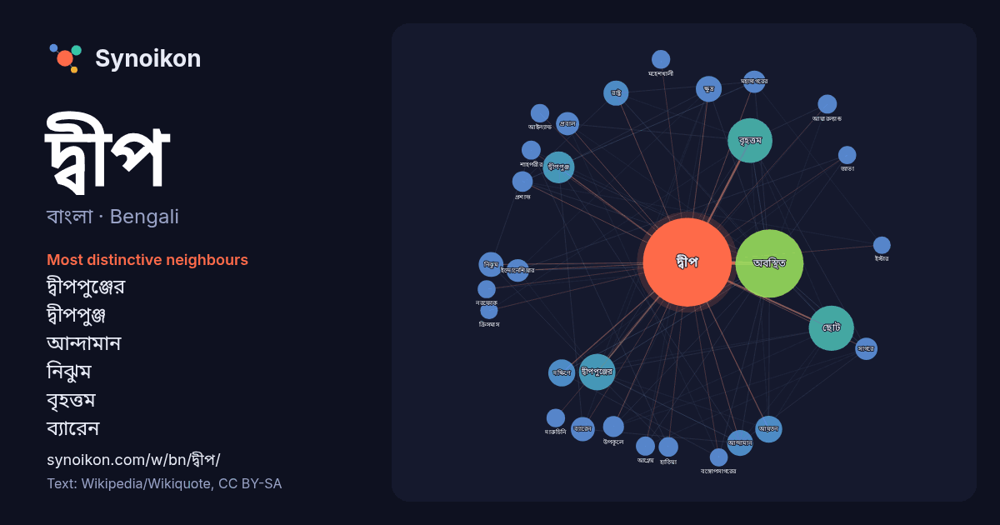

বাংলা · Bengali · word of the day list
দ্বীপ
“island” · The words found around it in 1763 instances from Bengali Wikipedia, Wikiquote.

Most distinctive neighbours
- দ্বীপপুঞ্জের 49×
- দ্বীপপুঞ্জ 38×
- আন্দামান 30×
- নিঝুম 30×
- বৃহত্তম 29×
- ব্যারেন 29×
- প্রবাল 24×
- সাগরে 21×
- ইন্দোনেশিয়ার 21×
- মহাসাগরের 21×
- হাতিয়া 19×
- শাহপরীর 19×
- অবস্থিত 18×
- দারুচিনি 18×
- মহেশখালী 18×
- আয়তন 17×
- নরফোক 17×
- আয়ারল্যান্ড 16×
- আগ্নেয় 16×
- আইল্যান্ড 16×
× = how many times more often than in general Bengali Wikipedia text.
Most frequent neighbours
- অবস্থিত 243
- ছোট 107
- বৃহত্তম 105
- গঠিত 85
- দক্ষিণ 70
- দ্বীপপুঞ্জের 70
- দ্বীপপুঞ্জ 53
- বাংলাদেশের 53
- প্রধান 45
- পরিচিত 44
- অঞ্চল 38
- আয়তন 38
- দক্ষিণে 38
- নাম 37
- মূল 36
- আন্দামান 35
- ক্ষুদ্র 35
- বড় 33
- রাষ্ট্র 33
- অন্তর্গত 32
In context
- ভূখণ্ডকে দ্বীপ বলা হয়। নিকটবর্তী একাধিক দ্বীপের গুচ্ছকে দ্বীপপুঞ্জ বলা হয়। দ্বীপ প্রধানত দুই রকমের হয়—মহাদেশীয় দ্বীপ এবং মহাসাগরীয় দ্বীপ।এছাড়া কৃত্রিম Wikipedia snippets · দ্বীপ
- সেন্ট মার্টিন দ্বীপ হলো বাংলাদেশের সর্ব দক্ষিণে বঙ্গোপসাগরের উত্তর-পূর্বাংশে অবস্থিত একটি প্রবাল দ্বীপ (মাত্র ৮ বর্গকিলোমিটার)। এটি কক্সবাজার জেলার টেকনাফ Wikipedia snippets · সেন্ট মার্টিন দ্বীপ
- লোহাচরা দ্বীপ একটি দ্বীপ ছিল, যা ১৯৮০ সালে স্থায়ীভাবে প্লাবিত হয়ে গেছে [১]। এটি ভারতের পশ্চিমবঙ্গ রাজ্যের নিকটবর্তী সুন্দরবন ব-দ্বীপের অংশ হিসাবে হুগলি Wikipedia snippets · লোহাচরা দ্বীপ
- দ্বীপ লাক্স নিবেদিত এবং ২০০৭ সালে মুক্তিপ্রাপ্ত একটি বাংলাদেশী চলচ্চিত্র। বাংলাদেশের জনপ্রিয় কথাসাহিত্যিক হুমায়ূন আহমেদ- এর উপন্যাস দারুচিনি দ্বীপ অবলম্বনে Wikipedia snippets · দারুচিনি দ্বীপ
- ভোলা দ্বীপ (দক্ষিণ শাহবাজপুর নামেও পরিচিত) হচ্ছে বাংলাদেশের বৃহত্তম দ্বীপ যার আয়তন ১,২৯৫ বর্গকিলোমিটার (৫০০ বর্গমাইল) এবং উপকূল রেখা ৩২৪ কিলোমিটার (২০১ Wikipedia snippets · ভোলা দ্বীপ
- জেলার অন্তর্গত একটি দ্বীপ ও পর্যটনকেন্দ্র। এখানে মৎস্য চাষের নানা প্রকল্প আছে। শীতের সময় এখানে নানা প্রজাতির পরিযায়ী পাখি আসে। দ্বীপটি বকখালির নিকটে বঙ্গপসাগরের Wikipedia snippets · হেনরি দ্বীপ
- নাম ছেঁড়া দ্বীপ। প্রবাল দ্বীপের ইউনিয়ন সেন্টমার্টিন থেকে ছেঁড়া দ্বীপ প্রায় আট কিলোমিটার দক্ষিণে অবস্থিত। দক্ষিণের এই বিচ্ছিন্ন দ্বীপে রয়েছে প্রচুর Wikipedia snippets · ছেঁড়া দ্বীপ
- লোথিয়ান দ্বীপ বন্যপ্রাণী অভয়ারণ্য হল ভারতের পশ্চিমবঙ্গ রাজ্যের দক্ষিণ ২৪ পরগনা জেলায় অবস্থিত একটি বন্যপ্রাণী অভয়ারণ্য। বঙ্গোপসাগরের কাছে সপ্তমুখী Wikipedia snippets · লোথিয়ান দ্বীপ বন্যপ্রাণী অভয়ারণ্য
More Bengali words
- অরণ্য
- আয়না
- ইতিহাস
- ঈশ্বর
- কাজ
- কুকুর
- ক্ষমতা
- খাদ্য
- গান
- গ্রীষ্ম
- ঘড়ি
- ঘণ্টা
- ঘোড়া
- ছায়া
- জননী
- জলবায়ু
- জীবন
- ঝড়
- টাকা
- ট্রেন
- দারুচিনি
- নক্ষত্র
- নীরবতা
- পরিবার
- পানি
- পাহাড়
- প্রকৃতি
- বাগান
- বিজ্ঞান
- বিড়াল
- বৃষ্টি
- ভাষা
- মধু
- মরুভূমি
- মানচিত্র
- মৃত্যু
- রাস্তা
- রুটি
- লবণ
- শরৎ
- শহর
- শিল্প
- শীত
- সত্য
- সময়
- সেতু
- সোনা
- স্বাস্থ্য
- হৃদয়
Precomputed on 2026-10-09 with default settings (±5 words, medium corpus). The interactive map can refresh it with live data.